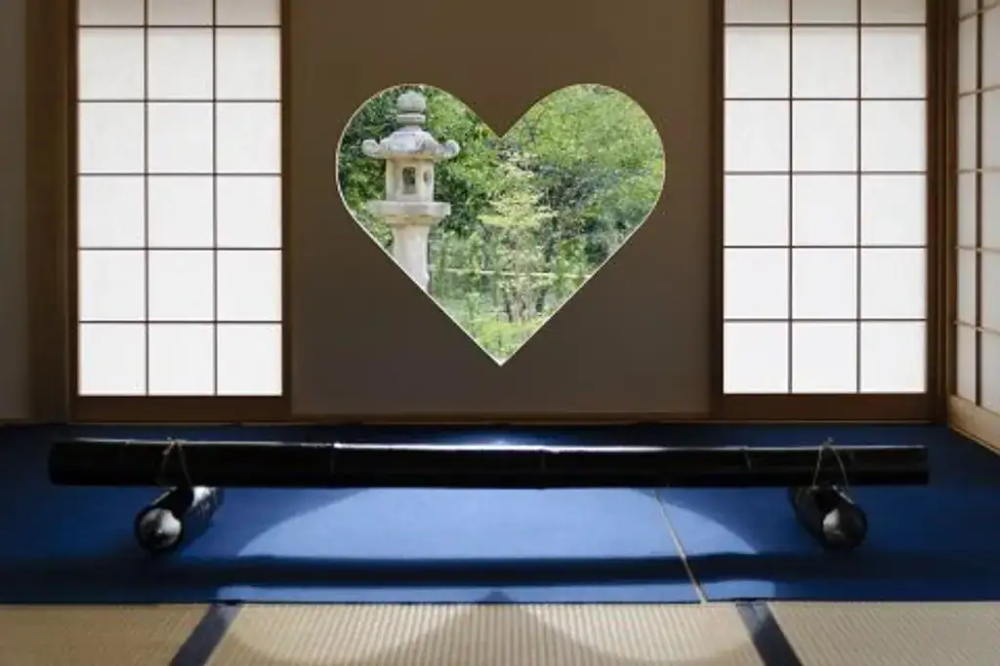
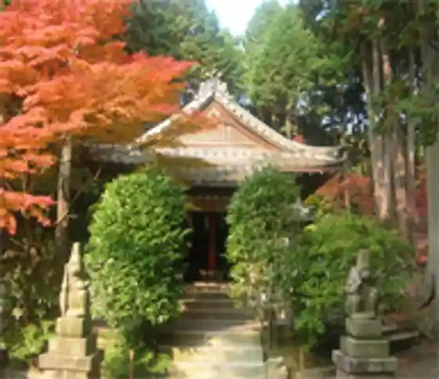
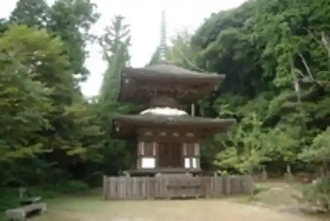
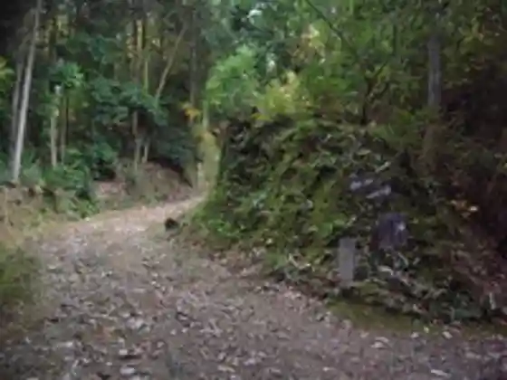
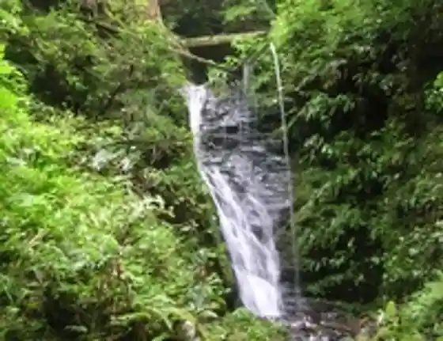

Japan / Kyoto / Ujitawara
Ujitawara, Kyoto: things to do, food and stays
Ujitawara · Kyoto
Ujitawara
Highlighted on the Kyoto map.

Explore Ujitawara, Kyoto: things to do, food and stays
Sights
Masatoshi In
Ujitawara, Kyoto
Sarumaru Shrine
Ujitawara, Kyoto

Juho Yama
Ujitawara, Kyoto

Juho Yama Tozando Inori no Sankei Michi
Ujitawara, Kyoto

Ryuo Falls
Ujitawara, Kyoto

Matsu Yama Kutsuwa Ike Nature Park
Ujitawara, Kyoto
Ujitawara Sogo Bunka Center
Ujitawara, Kyoto
Zenjo Tera
Ujitawara, Kyoto
Otaki
Ujitawara, Kyoto
Nagatani Soen Seika
Ujitawara, Kyoto
Tenmu Tenno Densho Uji Shui Monogatari
Ujitawara, Kyoto
Yasuragi no Michi
Ujitawara, Kyoto
Sato Yuki Kuchi Hon Town
Ujitawara, Kyoto
Ten Shrine
Ujitawara, Kyoto
Yama Taki Jiseki
Ujitawara, Kyoto
Tahara Tenno Sha Ato
Ujitawara, Kyoto
Daido Shrine
Ujitawara, Kyoto
Kaki Ya
Ujitawara, Kyoto
Zenjo Jiho Mono Dono
Ujitawara, Kyoto
Tahara Matataro Tadatsuna no Haka
Ujitawara, Kyoto
Soen Koyu Iori Yantan
Ujitawara, Kyoto
Tahara Michi Koro Kaki Hassho Densetsu
Ujitawara, Kyoto
Shinsei Nyudo Tsuka
Ujitawara, Kyoto
Omiya Shrine
Ujitawara, Kyoto
Takao
Ujitawara, Kyoto
Yamaguchi Castle Ruins
Ujitawara, Kyoto
Shigaraki Kaido Ieyasu Iga Koe no Michi
Ujitawara, Kyoto
Myoraku Tera
Ujitawara, Kyoto
Zenjo Tera Gorin to
Ujitawara, Kyoto
Daidoji
Ujitawara, Kyoto
Kabura Village no Uji Gyo Tahara no Kakure Sato
Ujitawara, Kyoto
O Kurisu Shrine
Ujitawara, Kyoto
Fureai Koryu Shisetsu (Nishi no Yama Tembo Plaza)
Ujitawara, Kyoto
Cha Muneaki Shrine
Ujitawara, Kyoto
Hokyo Into
Ujitawara, Kyoto
Iwamoto Castle Ruins
Ujitawara, Kyoto
Ken Fuji Shrine
Ujitawara, Kyoto